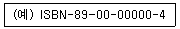
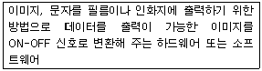
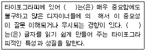

전자출판기능사 (2005-10-02 기출문제)
1과목: 출판론
1. 그레이 스케일(Gray Scale)과 가장 관련 있는 것은?
- 색상대비
- 채도대비
- 명도단계
- 채도단계
(정답률: 77%)

2. 국제표준도서번호(ISBN)의 코드순서로서 맞는 것은?

- 국가번호-발행자번호-도서명식별번호-체크기호
- 국가번호-체크기호-발행자번호-도서명식별번호
- 체크기호-국가번호-발행자번호-도서명식별번호
- 체크기호-도서명식별번호-발행자번호-국가번호
(정답률: 90%)
3. PS판의 내쇄력 향상을 위한 처리 공정은?
- 빛쬠
- 버닝
- 래커칠
- 정면
(정답률: 69%)
4. 책자의 규격 중 문고본인 A6판의 규격은 어느 정도인가?
- 148mm*210mm
- 1⑤mm*148mm
- 210mm*297mm
- 74mm*210mm
(정답률: 81%)
5. 양장 제책에서 표지의 여는 쪽 위아래에 클로스나 가죽 등을 세모꼴로 붙이는 것을 무엇이라 하는가?
- 동정
- 책귀
- 귀발(받)이
- 돋음띠
(정답률: 84%)
6. 단행본의 발행 목적에 따른 분류가 아닌 것은?
- 학술서
- 번역서
- 교양서
- 전문서
(정답률: 75%)
7. 포지티브형 PS판의 제판공정을 바르게 나열한 것은?
- 노광-현상-정착-고무칠-판완성
- 노광-정착-현상-고무칠-판완성
- 부식-노광-현상-정착-판완성
- 노광-현상-고무칠-정착-판완성
(정답률: 65%)
8. 표지를 제외한 모든 속장을 실로 꿰매고, 정해진 규격으로 재단한 다음, 둥근둥이나 모등으로 튼튼하게 굳혀진 천과 면지의 힘으로 두터운 합지를 쓴 표지에 붙여 만드는 제책 방식은?
- 반양장
- 양장
- 중철
- 호부장
(정답률: 86%)
9. 스크린 인쇄시 판이 막혀 인쇄가 잘되지 않는 것과 가장 거리가 먼 것은?
- 잉크점도가 너무 높음
- 용제의 잘못 선택
- 잉크의 건조가 늦음
- 잉크량의 부족
(정답률: 71%)
10. 색상 표기 중 5GY 6/4에서 4에 대한 가장 올바른 설명은?
- 명도
- 채도
- 색상
- 순도
(정답률: 89%)
11. 출판기획의 요건으로 적시성(適時性)에 해당하는 것은?
- 기획 아이디어를 어떻게, 어떤 대상에 적용할 것인가 판단
- 시대 변화에 민감해야 하고 독자의 의식 변화를 예견
- 문화적 배경에 근거하여 독자들이 공감할 수 있도록 고안
- 시간과 공간을 뛰어넘어 확대 이용이 가능한 연속적인 파급 효과
(정답률: 75%)
12. 알루미늄판에 모랫발을 세워서 양극산화로 표면을 처리한 후 감광액을 도포한 판은?
- 와이프온판
- 난백판
- PVA판
- PS판
(정답률: 73%)
13. 색감각을 일으키는 방사를 무엇이라 하는가?
- 시자극
- 색지각
- 시자극
- 색자극
(정답률: 52%)
14. 기업에서 일상적으로 처리하는 주문서, 송장 등과 같은 기업 간의 상거래 정보를 종이로 된 문서나 전표 대신에 컴퓨터가 처리할 수 있는 표준화죈 형태와 코드체계를 이용하여 컴퓨터 간에 전자적인 전송수단을 통해 교환하는 시스템을 무엇이라 하는가?
- ISBN(International Standard Book Number)
- EDI(Electronic Data Interchange)
- DOI(Digital Object Identify)
- VAN(Value Added Network)
(정답률: 72%)
15. 바람직한 의사결정 과정을 순서대로 나열한 것 중 맞는 것은?
- 정보의 파악-설계의 구성-선택의 실현-검토와 조정
- 정보의 파악-검토와 조정-설계의 구성-선택의 실현
- 설계의 구성-정보의 파악-선택의 실현-검토와 조정
- 정보의 파악-설계의 구성-검토와 조정-선택의 실현
(정답률: 57%)
16. 출판의 기능 중에서 다른 미디어가 추종할 수 없는 출판미디어가 가지고 있는 탁월한(특수한) 기능은?
- 문화의 광고기능
- 문화의 동원기능
- 문화의 단절기능
- 문화의 보전, 전달기능
(정답률: 86%)
17. 인쇄판이 유연하여 피인쇄체가 곡면인 경우에도 직접 인쇄가 가능한 방식은?
- 볼록판인쇄
- 그라비아인쇄
- 오프셋인쇄
- 스크린인쇄
(정답률: 64%)
18. 잡지와 서적의 합성어로서 서적이면서도 저널한 성격을 지니고 있으며 많은 소재를 모아 편집하였고 광고가 있으며 다채롭게 레이아웃한 점이 잡지와 비슷하나 발행방식이 정기적이 아니라는 점이 특징인 것은?
- 총서(叢書)
- 무크(mook)
- 문고(文庫)
- 전집(全集)
(정답률: 81%)
19. 그라비아 인쇄를 출판, 포장, 특수 그라비아로 분류할 때 출판 그라비아 인쇄에 속하지 않는 것은?
- 팜플렛
- 라벨
- 카다로그
- 포스터
(정답률: 75%)
20. 기획을 집행하여 출간하기까지의 기간을 3년 이상으로 보고 책을 기획한다면, 이는 어떤 기획에 해당되는가?
- 단기기획
- 중기기획
- 말기기획
- 장기기획
(정답률: 55%)
2과목: 전자 출판
21. 인터넷의 정보표현언어가 아닌 것은?
- HTML
- JAVA
- LINUX
- XML
(정답률: 77%)
22. 다음에 설명하는 내용과 가장 관련 있는 용어는?

- 현상기
- 립(RIP)
- OPI서버
- 이미지세터
(정답률: 55%)
23. 이것은 특수한 전자기기로서 손바닥만한 크기를 가지고 있으며, 플레시 메모리칩에 담긴 파일을 바꿔가며 액정 화면 스크린을 통해 내용을 읽는 디지털 시대의 서적이라고 할 수 있는 것은?
- CD-ROM
- e-book
- DTP
- FAX-Book
(정답률: 61%)
24. 출력기의 기록 방식 중 인화지나 필름 자체의 지탱력을 이용한 드럼 방식은?
- 캡스터 방식
- 가상드럼 방식
- 외장드럼 방식
- 내장드럼 방식
(정답률: 38%)
25. 화면책(Neetwork Screen Book)을 만들 때 사용하는 소프트웨어가 아닌 것은?
- 나모웹에디터
- 핫도그프로
- 칵텔99
- 드림위버
(정답률: 42%)
26. 전자출판 응용프로그램인 PhotoShop에서 지원되지 않는 파일 포맷은?
- BMP
- EPS
- CDR, CGM
(정답률: 80%)
27. DTP(탁상출판)의 출판과정에서 반드시 하지 않아도 되는 작업은?
- 교정
- 편집레이아웃
- 출력
- 제판작업(CAMERA WORK)
(정답률: 79%)
28. 글자 크기를 나타내는 단위 체계가 아닌 것은?
- 포인트
- 파이카
- 비트
- 급
(정답률: 56%)
29. 다음 중 편집에서 특수효과 프로그램에 쓰이는 것은?
- 갤러리이펙트
- 일러스트레이터
- 포토샵
- 프리핸드
(정답률: 60%)
30. 다음 중 저장 용량이 가장 큰 매체는?
- 음악용 CD
- CD-ROM
- FLOPPY DISK
- DVD-ROM
(정답률: 77%)
31. 외부의 전기적 신호를 컴퓨터 내부로 입력하거나 컴퓨터 내부에서 처리된 각종 신호를 외부로 출력하기 위해 여러 개의 포트(port)가 컴퓨터 뒷면에 나와 있는 것을 볼 수 있다. 고성능 직렬버스 표준(IEEE 1394)으로서 이러한 방식과 가장 관련 있는 것은?
- USB(Universal Serial Bus)방식
- 패러럴(Parallel)방식
- SCSI(Small Computer System Inetrface)방식
- 파이어와이어(Fire Wire)방식
(정답률: 50%)
32. 사진, 그림, 문자 등 이미지를 입력하는 장치로서 전자출판에 많이 사용되고, 그림을 읽어 들이는 것뿐만 아니라 이미 인쇄된 문자를 입력하는데 사용되기도 하는 것은?
- Scanner
- Mouse
- Keyboard
- Printer
(정답률: 90%)
33. FTP에 대한 설명이 아닌 것은?
- 온라인상에서 파일을 전송하는 프로토콜이다.
- http://123.456.789.12 와 같이 입력해야 한다.
- 웹페이지 파일들을 서버로 전송하거나 받을 때 흔히 사용한다.
- 인터넷의 TCP/IP 응용 프로토콜 중의 하나이다.
(정답률: 73%)
34. 다음 중 컴퓨터의 모니터 위에서 편집된 화면 그대로의 것을 인쇄 형태로 억을 수 있다는 의미의 용어는?
- WYSIWYG
- LAYOUT
- GRID
- TYPOGRAPHIC
(정답률: 75%)
35. 한글 표준규격 코드는 몇 바이트인가?
- 1 Byte
- 2 Byte
- 8 Byte
- 16 byte
(정답률: 45%)
36. 디지털인쇄(Digital Printing)를 가장 적합하게 설명한 것은?
- 디지털 시스템으로 생산되는 제판의 형태
- 종이를 사용하지 않고 디지털 상태로 저장만 되는 제판 및 인쇄 형태
- 필름과 인쇄판을 만들지 않고 데이터를 직접 인쇄기에서 처리, 인쇄하는 형태
- 빛쬠기 자체가 디지털화 되어 있어 자동으로 제판되는 시스템
(정답률: 67%)
37. DTP에 대한 용어를 가장 바르게 나타낸 것은?
- Desk Tower Publishing
- Document Top Publishing
- Document To Publishing
- Desk Top Publishing
(정답률: 90%)
38. 다음 중 하이퍼링크 태그는?
- <hr>
- <img src>
- <frame>
- <a href>
(정답률: 59%)
39. 레이저 광선을 통하여 정보를 인식할 수 있는 CD-ROM을 출판에 이용할 경우 장점이 아닌 것은?
- 문자정보 뿐만 아니라 소리, 동영상 까지도 표현 할 수 있다.
- 교육용과 아동용 책 또는 백과사전과 같은 출판에 적당하다.
- 기존의 책에 비해 가격이 저렴하고, 보관을 위한 많은 공간이 필요하지 않다.
- 저장능력이 뛰어나 음향이나 영상 같은 정보를 거의 무한정하게 담을 수 있다.
(정답률: 72%)
40. CD-ROM에 디지털 데이터를 저장하는 방식을 정해 놓은 규격은?
- 그린 북 표준 포맷
- 레드 북 표준 포멧
- 옐로 북 표준 포맷
- 블루 북 표준 포멧
(정답률: 77%)
3과목: 전산 편집
41. A4사이즈로 여성잡지나 주간지 등에 주로 쓰이는 판형의 이름은?
- 국판
- 국배판
- 사륙배판
- 크라운판
(정답률: 71%)
42. 양장 제책에서 면지의 주된 역할은?
- 책에 습기가 차는 것을 방지해 준다.
- 책장을 넘기기 쉽게 해 준다.
- 책등이 변형되지 않도록 해 준다.
- 표지와 본문을 연결시켜 준다.
(정답률: 73%)
43. 책의 판형과 실제 크기를 나타낸 것 중 가장 적절한 것은?
- 신국판 : 225*152mm
- 크라운판 : 374*254mm
- 국배판 : 225*254mm
- 4*6배판 : 297*210mm
(정답률: 45%)
44. 글자의 서체 및 크기, 자간, 행간, 사진의 위치 선정, 인쇄 표현에 대한 지시 등을 결정하는 작업은 무엇인가?
- 스케치
- 그리드
- 레이아웃
- 폰트 스타일
(정답률: 69%)
45. 중질지에 사진원고를 인쇄하려 할 때 가장 적합한 스크린 선 수는?
- 35~50선
- 85~100선
- 133~175선
- 185~250선
(정답률: 58%)
46. 편집에서 사용되는 캡션(Caption)의 가장 정확한 의미는?
- 그림이라는 뜻이다.
- 사진과 그림 등을 설명하는 짧은 문장이다.
- 본문을 장식하는 문자의 한 요소이다.
- 다이어그램을 설명하는 글이다.
(정답률: 86%)
47. 전산편집된 내용을 프린트를 통해 교정을 할 때 프린트 교정의 요소와 가장 거리가 먼 것은?
- 틀리거나 에러가 발생한 문자의 교정
- 색상의 교정
- 면주와 쪽 숫자의 교정
- 용지의 백색도, 평활도 교정
(정답률: 81%)
48. 다음 중 사진의 제판 인쇄방식이 아닌 것은?
- 연판 방식
- 오프셋 방식
- 그라비아 방식
- 트리밍 방식
(정답률: 50%)
49. 지면이 부드럽고 단조로울 때 어떤 일부분의 포인트만은 변화시키거나 강조시키면 그 지면은 어느 정도 긴장의 효과가 있다. 레이아웃의 원리 중 어디에 해당하는가?
- 비례
- 밸런스
- 액센트
- 대조
(정답률: 62%)
50. 다음 종이 중 가장 품질이 좋은 것은?
- 중질지
- 상갱지
- 모조지
- 갱지
(정답률: 52%)
51. 인쇄물 제작 시 종이에 대한 설명으로 틀린 것은?
- 종이는 낱장과 두루마리가 있다.
- 두루마리는 윤전 인쇄에 사용하기 위해 축에 감은 종이 이다.
- 낱장은 연(ream)을 단위로 유통되고, 원칙적으로 1연은 1000장을 기준으로 한다.
- 연(ream)은 간단히 R이라 표기하고, 매수를 S로 표기할 때 10연 250매를 10R 250S로 나타낸다.
(정답률: 78%)
52. 책의 구성 안내나 표기상의 해설이 필요할 때 추가하는 책의 구성요소로서 범례라고도 하는 것은?
- 일러두기
- 헌사
- 추천사
- 약어표
(정답률: 67%)
53. 책의 구성요소 중 일반적으로 딋부분에 오는 것이 아닌 것은?
- 참고문헌
- 찾아보기
- 차례
- 부록
(정답률: 93%)
54. 인쇄 출판물의 크기를 구별하는 단위를 판형이라고 한다. 국판 전지 사이즈로 옳은 것은?
- 1090*788mm
- 1085*765mm
- 1030*728mm
- 939*636mm
(정답률: 60%)
55. 흑백 사진을 프린트할 때, 두 가지 다른 컬러의 잉크를 이용하여 깊이와 풍성함을 더해주는 기법은?
- 모노톤
- 듀오톤
- 트리톤
- 쿼드톤
(정답률: 67%)
56. 다음( )안에 들어갈 말로 거장 적당한 것은?

- 전달성
- 가독성
- 그리그
- 레이아웃
(정답률: 79%)
57. 포인트 단위와 급 단위의 비교에서 가장 유사한 것은?
- 1Pt = 0.4급
- 1Pt = 1.4급
- 1Pt = 2.4급
- 1Pt = 3.4급
(정답률: 50%)
58. Yo, Te, LY, YA 등과 같이 글자와 글자사이의 공간을 선택적으로 줄임으로서 조판하였을 때 글자와 글자사이의 공간이 균등하게 남도록 하는 것은?
- 커닝(Kerning)
- 스파인(spaine)
- 다이그라프(digraph)
- 스템(stem)
(정답률: 81%)
59. 디지털 방식에서 사용하는 화상의 해상도를 나타내는 단위로서, 1인치당 망점(dot) 수를 표시한 것은?
- DPI
- 콘트라스트
- 비트(Bit)
- 감도
(정답률: 69%)
60. 타이포그래피의 주요 시각적 요소가 아닌 것은?
- 글자의 크기
- 글자의 종류
- 글자 간격
- 종이 규격
(정답률: 93%)